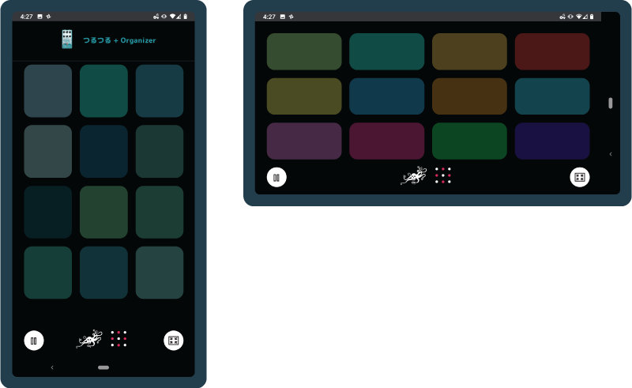

OnomatoPedal
OnomatoPedal is an audio playground and a series of downloadable sample packs and music tracks inspired by the Japanese Onomotopoetic words and the music effects pedals of the world famous EarthQuaker Devices.
How To Play
The main screen will display several EarthQuaker pedals. Click on 'Shuffle Pedals' to get a new set of choices. Once you see a pedal/onomotopeia that you would like to explore, click on it.
On Desktop
You will be able to play a set of sounds with the following 12 keys on your computer keyboard: z, x, c, v, a, s, d, f, q, w, e, r.
On Mobile
Click to enter 'Play Mode', the track will start and you will see twelve drum pads. You can play along with the track or pause the track to just play the pads.
Free Sample Pack
On the desktop version, you see an option to download the sample pack files. Each pedal also has a link to it's official page at the EarthQuaker website.
Sample packs are licensed under a Creative Commons Attribution-ShareAlike 4.0 International License.
Created by PatternBased
Music by Puffy Shapes
Design and Code by Siori Kitajima
 Fork this project on github
Fork this project on github
Music production/curation by Joseph Minadeo
Music by Puffy Shapes, Low in the Sky, Taka Tozawa, Billy Dixon, Corey Farrow, Patrick McNulty
OnomotoPedal, The album is available at the PatternBased Bandcamp.
Pedals by EarthQuaker Devices
Japanese Onomotope description by "An Illustrated Dictionary of Japanese Onomatopoetic Expressions" by Taro Gomi, published by Kodansha Ltd,
Made with amazing tools including Pepar.js, Howler.js, Slick.js,